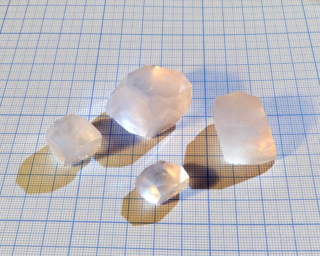

Glucose Sodium Chloride
Trigonal co-crystal of glucose and sodium chloride: 2C6H12O6·NaCl·H2O
 Glucose (grape sugar) and sodium chloride (table salt) do not react, but can crystallize together, forming a single compound where there are 2 molecules of glucose per one formal molecule of NaCl. Such compounds, formed by crystallization without chemical interaction, are called cocrystals.
Glucose (grape sugar) and sodium chloride (table salt) do not react, but can crystallize together, forming a single compound where there are 2 molecules of glucose per one formal molecule of NaCl. Such compounds, formed by crystallization without chemical interaction, are called cocrystals.
It is well soluble in water (my estimate is 90..110g per 100ml at room temperature) and forms crystals that are different both from pure glucose and from table salt. One of the photos shows the biggest crystal along its order-3 symmetry axis.
{kind=link}
Growth time around 1 month, using slow evaporation method.
Properties
- Crystal system: trigonal. This means that their base shape is cube, stretched along main diagonal.
- Air stability: stable.
Preparation
This compound easily crystallizes from a solution, containing glucose and NaCl in equimolar proportion.
Make mother solution by dissolving 100g of glucose and 15g of NaCl in 90...100g of hot water. Let it cool and put into open container to allow slow evaporation. When small rhombic seed crystal appear on the container walls or solution surface, take few best ones, attach then to a thread and proceed to growing (see this gallery).
Recrystallization improves purity of the compound and clarity of crystals.
I used food-grade glucose and table salt as source materials.
Growing
Because of high solubility and noticeable viscosity of the saturated solution, evaporation rate must be very slow in order to obtain large single crystals. I covered growing container with a paper disc with relatively small hole.
{kind=link}
Safety
This compound is safe, even edible, though not tasty.
More images
{kind=link}
Showing their size. 
{kind=link}
References
- Imgur galleries:
- A paper on crystalline structure: Structure of the α-D-glucose–sodium chloride–water complex (2/1/1)